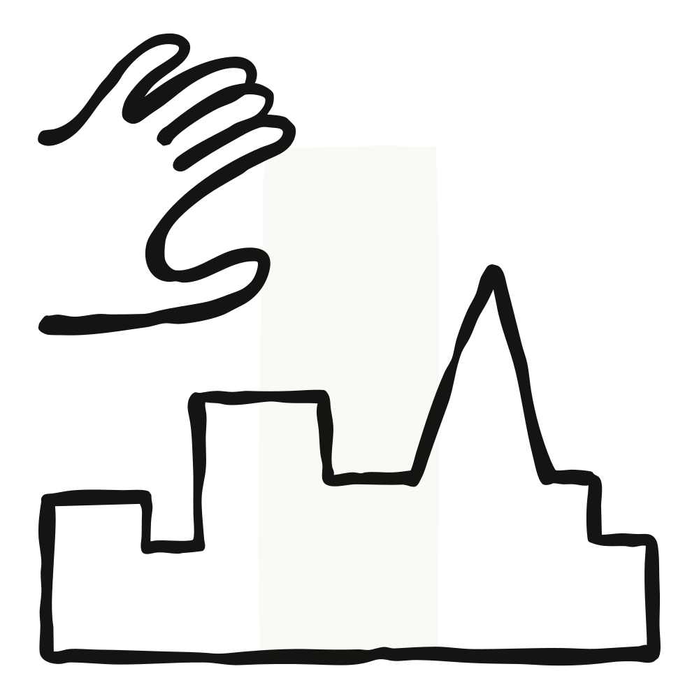

글로벌 자산운용사 T. Rowe Price가 투자 조직 전반에 걸쳐 Claude 활용을 확대한다고 발표했다. 포트폴리오 매니저와 애널리스트는 리서치 업무에 Claude와 Claude Cowork를 쓰고, 개발자들은 Claude Code로 투자 도구를 직접 만든다.
T. Rowe Price는 투자 프로세스의 세 영역에 Claude를 배치하고 있다.
이번 도입은 T. Rowe Price가 지난 8월 발표한 AI 리더십 체계 아래에서 이뤄진다. 이 체계는 투자(Investments) 부문과 글로벌 유통(Global Distribution) 부문 각각에 AI 리더를 두고, T. Rowe Price Labs가 전사적으로 AI 애플리케이션을 평가하고 확장하는 역할을 맡는 구조다.
"대부분의 엔터프라이즈 AI 도입은 백오피스에서 시작한다. T. Rowe Price는 종목을 고르는 사람들에서부터 시작했다."
"Claude는 우리 투자 전문가들이 더 넓게, 더 깊이 파고들 수 있게 해준다."
이번 확대는 교육, 인재 육성, 책임 있는 사용 가이드라인 마련 등 T. Rowe Price의 더 폭넓은 AI 노력과 함께 진행된다. T. Rowe Price는 투자, 회사 운영, 고객 서비스 전반에 AI를 적용하는 데 있어 자산운용 업계를 선도하는 것을 목표로 하고 있다.
T. Rowe Price의 투자 리서치 프로세스는 거의 90년 가까이 고객에게 서비스를 제공해 온 역사를 갖고 있다.
더 알아보기: